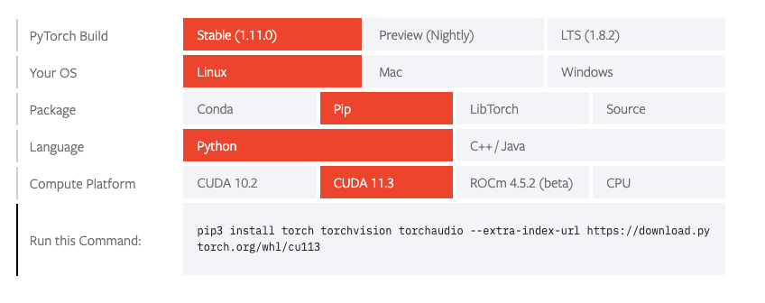
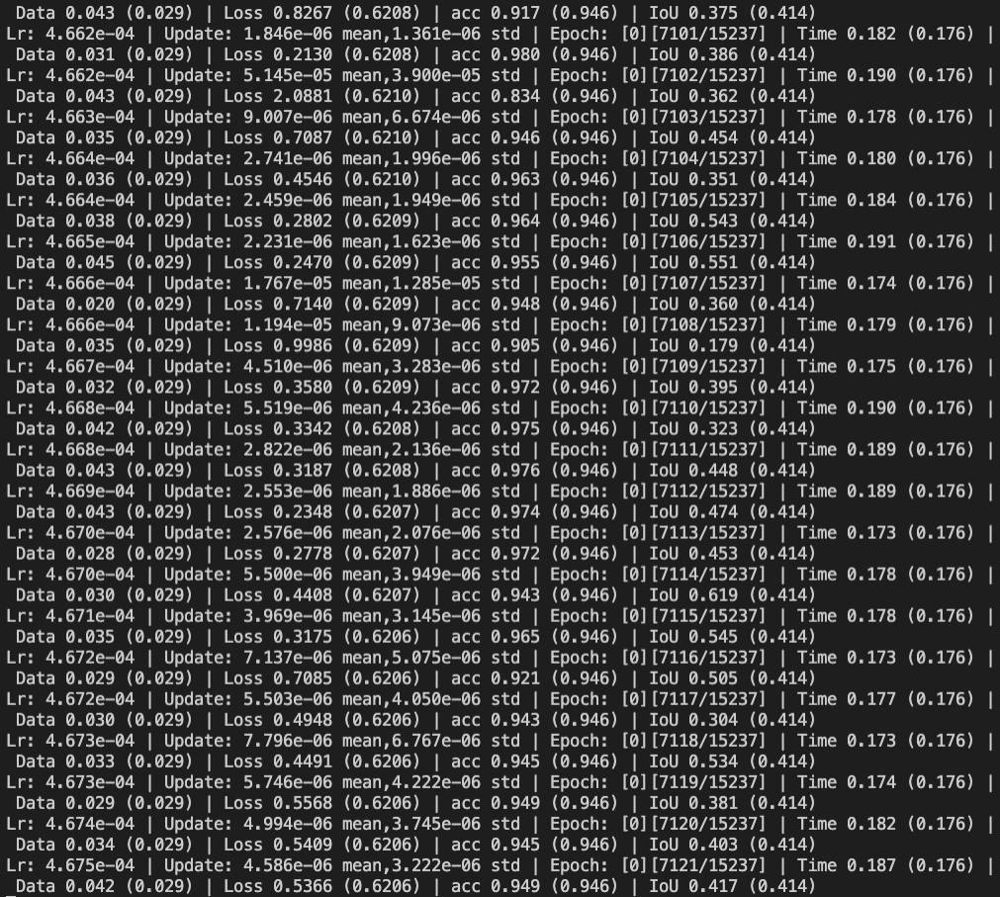

使用autodl的时候, 用pip install -r requirements.txt下载代码要求的包之后, 发现训练直接开始报错.
一些环境的参数:
显卡型号: RTX A5000 显存:24GB
镜像版本:
PyTorch 1.10.0
Python 3.8
Cuda 11.3
CPU:
15核 AMD EPYC 7543 32-Core Processor
内存:30GB
报错的内容为:
NVIDIA GeForce RTX A5000 with CUDA capability sm_86 is not compatible with the current PyTorch installation. The current PyTorch install supports CUDA capabilities sm_37 sm_50 sm_60 sm_70.
If you want to use the NVIDIA GeForce RTX A5000 GPU with PyTorch.
简单版: 卸载当前环境中torch, torchvision, torchaudio, 使用pytorch官方指定的下载方式执行对应可执行cuda版本的pytorch
eg. (具体需要通过上面的连接来确定具体下载的命令)
pip uninstall torch torchvision torchaudio
pip install torch torchvision torchaudio --extra-index-url https://download.pytorch.org/whl/cu113
乍一看像是pytorch版本出了问题, 因为当时通过nvidia-smi以及nvcc --version都看到了cuda版本为11.3, 而11.3版本目前是支持sm_86架构的.
后来看了这个, 检查了一下虚拟环境中pytorch连接的对应的cuda版本:
import torch
torch.version.cuda
> 10.2
这下问题明确了, 即虚拟环境中pytorch自动连接的cuda版本出了问题, 不能支持设备上的显卡, 而上述两个命令查询的都是实体环境的状态.
如果要解决, 需要先卸载当前虚拟环境中的torch相关组件: torch, torchvision, torchaudio
(s) root@container-8fb311963c-c800a7a5:/home# pip uninstall torch torchvision torchaudio
然后再使用官网提供的下载方式, 指定cuda版本, 重新下载:

pip3 install torch torchvision torchaudio --extra-index-url https://download.pytorch.org/whl/cu113
安装完成后再次检查cuda版本号:
import torch
torch.version.cuda
> 11.3
问题解决, 可以开始训练了.
